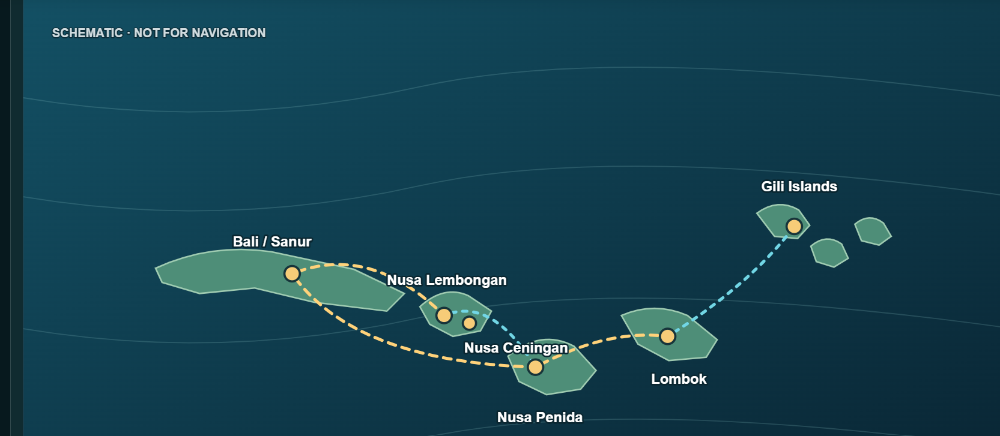

✦ طائر الشرق | TAYER ALSHAREQ
TRAVEL · DISCOVER · EXPERIENCE
Overview
Indonesia
← Back to Indonesia
Indonesia · Bali
Bali route map
Open the Bali 3D journal ✦
A dedicated Bali map, separate from Jakarta.

♫ Play ambience